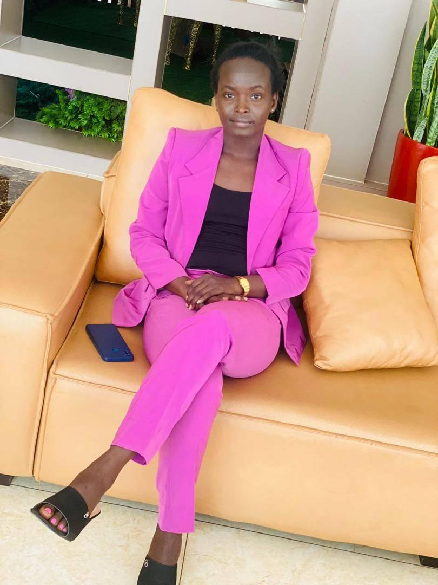

Dorcus Adich'Resume

Summary
I'm a dedicated software engineer deeply passionate about full-stack development. I find immense joy in my work and continuously strive to enhance my skills in this dynamic field, with a solid commitment to my craft.
Education
Software engineer student at
African Ledaership University
Started in January 2023
end on December 2025.
completed intoduction to data management,
Basic python
from meta in Coursea
Experience
Teacher at Concorda Primary and Nursery School
2021-2022
- Lesson planning and delivery
- Creation of educational materials
- Student assessment and feedback
- Classroom management
- Collaboration with colleagues and administrators
- Communication with parents or guardians
Transilator at Nyumanzi Refugee settlement
2015-2016
- Facilitate communication between healthcare providers and patients with limited language proficiency.
- Ensure accurate understanding of medical information, diagnoses, and treatment options.
- Provide cultural context to healthcare providers to understand patients' backgrounds and preferences.
- Advocate for patients to ensure their voices are heard and concerns addressed.
- Promote effective communication and patient-centered care for improved health outcomes.
Public and commuincation coordinator at SSSALU
2024-2025
- Manage communication channels effectively to ensure the dissemination of information.
- Create engaging content to highlight organizational initiatives and achievements.
- Plan and organize events to engage the community and raise awareness.
- Facilitate internal communication to keep staff informed about relevant news and updates.
CO Founder at South Sudan Waste Management LTD
2023-present
- Project manger
- coordinate the process
- collaborate with team for successiful accomplishement
skills
- Data analyst
- HTML
- Javascript
- Python
- Team work
- Cascading Styling Sheet
- Project Management
- commuincation
Interest
- Women empowerment
- Wildlife conservation
- Education
Others